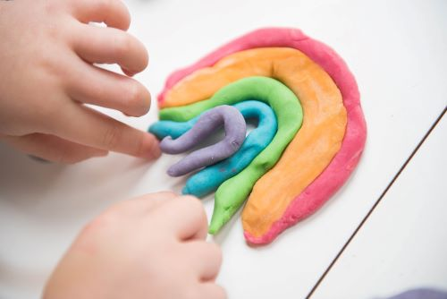

Playdough Recipe
This is my favorite playdough recipe, it is very easy to make and it doesn't require any cooking.

What you will need:
- Large bowl
- Food Coloring
- Large mixing spoon
- measuring cups and spoons
- Large Ziplock storage bag
- Kettle
Ingredients:
- 2 1/2 cups of Flour
- 1/2 cup of Salt
- 2 tbs of Cream of Tartar
- 2 cups of boiling water
- 3 tbs of oil (I use olive oil)
Directions:
- Mix the dry ingredients in a large mixing bowl, make a well in the centre.
- Add oil and food coloring (about 10 drops, really depends how intense you wnat your color) to the water.
- Add the water mixture to the dry ingredients. Fold your dry ingredients into the the water mixture.
- Once your ingredients are mixed, you can knead the playdough until it is the right consistency. You can add more flour if it is too sticky to handle.
- You can store your playdough in a large Ziplock bag up to one week, then you should throw it away.